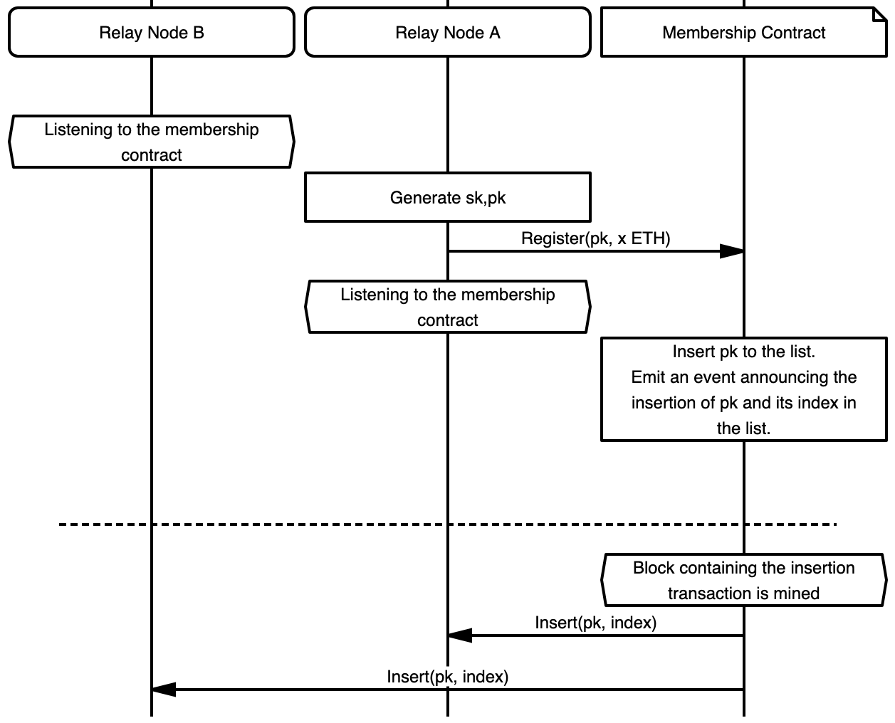
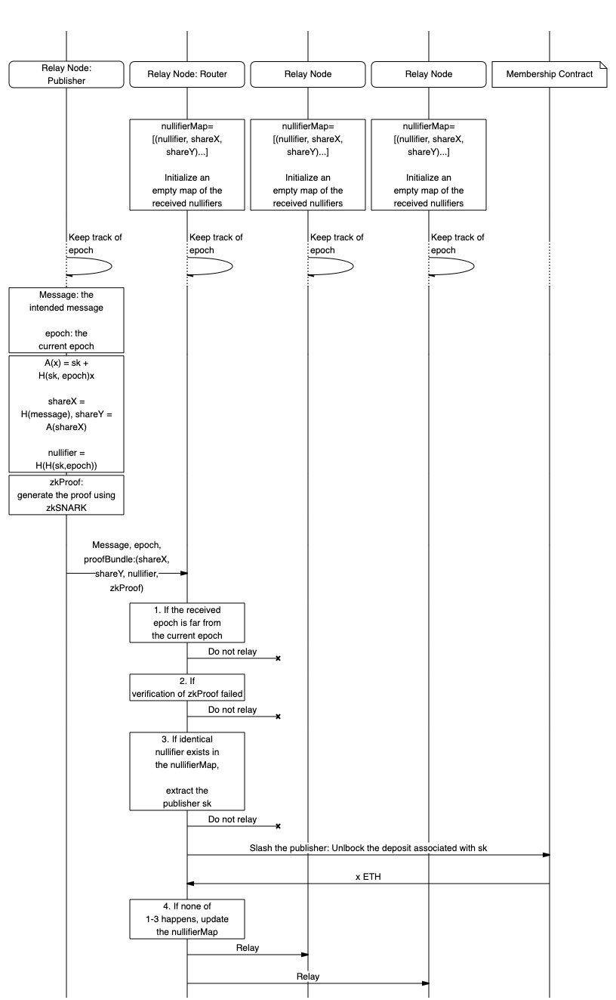

17/WAKU2-RLN-RELAY
| Field | Value |
|---|---|
| Name | Waku v2 RLN Relay |
| Slug | 17 |
| Status | draft |
| Type | RFC |
| Category | core |
| Editor | Alvaro Revuelta alvaro@status.im |
| Contributors | Oskar Thorén oskarth@titanproxy.com, Aaryamann Challani p1ge0nh8er@proton.me, Sanaz Taheri sanaz@status.im, Hanno Cornelius hanno@status.im |
Timeline
- 2026-06-16 —
16e8af1— Chore/separate messaging specs (#361) - 2026-05-11 —
1ac7689— chore: split ift ts specs (#334) - 2026-04-20 —
c3d15a9— COSS overhaul: new statuses, CFR type, raw-spec leniency (#308) - 2026-02-09 —
afd94c8— chore: add math support (#287) - 2026-01-16 —
f01d5b9— chore: fix links (#260) - 2026-01-16 —
89f2ea8— Chore/mdbook updates (#258) - 2025-12-22 —
0f1855e— Chore/fix headers (#239) - 2025-12-22 —
b1a5783— Chore/mdbook updates (#237) - 2025-12-18 —
d03e699— ci: add mdBook configuration (#233) - 2024-11-20 —
776c1b7— rfc-index: Update (#110) - 2024-09-13 —
3ab314d— Fix Files for Linting (#94) - 2024-08-05 —
eb25cd0— chore: replace email addresses (#86) - 2024-06-06 —
5064ded— Update 17/WAKU2-RLN-RELAY: Proof Size (#44) - 2024-05-28 —
7b443c1— 17/WAKU2-RLN-RELAY: Update (#32) - 2024-03-21 —
2eaa794— Broken Links + Change Editors (#26) - 2024-02-01 —
244ea55— Update and rename RLN-RELAY.md to rln-relay.md - 2024-01-27 —
7bcefac— Rename README.md to RLN-RELAY.md - 2024-01-27 —
eef961b— remove rfs folder - 2024-01-26 —
1ed5919— Update README.md - 2024-01-25 —
4b3b4e3— Create README.md
Abstract
This specification describes the 17/WAKU2-RLN-RELAY protocol,
which is an extension of 11/WAKU2-RELAY
to provide spam protection using Rate Limiting Nullifiers (RLN).
The security objective is to contain spam activity in the 64/WAKU-NETWORK by enforcing a global messaging rate to all the peers. Peers that violate the messaging rate are considered spammers and their message is considered spam. Spammers are also financially punished and removed from the system.
Motivation
In open and anonymous p2p messaging networks, one big problem is spam resistance. Existing solutions, such as Whisper’s proof of work, are computationally expensive hence not suitable for resource-limited nodes. Other reputation-based approaches might not be desirable, due to issues around arbitrary exclusion and privacy.
We augment the 11/WAKU2-RELAY protocol
with a novel construct of RLN
to enable an efficient economic spam prevention mechanism
that can be run in resource-constrained environments.
Specification
The key words “MUST”, “MUST NOT”, “REQUIRED”, “SHALL”, “SHALL NOT”, “SHOULD”, “SHOULD NOT”, “RECOMMENDED”, “MAY”, and “OPTIONAL” in this document are to be interpreted as described in 2119.
Flow
The messaging rate is defined by the period
which indicates how many messages can be sent in a given period.
We define an epoch as unix_time / period .
For example, if unix_time is 1644810116 and we set period to 30,
then epoch is (unix_time/period) = 54827003.
NOTE: The
epochrefers to the epoch in RLN and not Unix epoch. This means a message can only be sent every period, where theperiodis up to the application.
See section Recommended System Parameters
for the RECOMMENDED method to set a sensible period value depending on the application.
Peers subscribed to a spam-protected pubsubTopic
are only allowed to send one message per epoch.
The higher-level layers adopting 17/WAKU2-RLN-RELAY
MAY choose to enforce the messaging rate for WakuMessages
with a specific contentTopic published on a pubsubTopic.
Setup and Registration
A pubsubTopic that is spam-protected requires subscribed peers to form a RLN group.
- Peers MUST be registered to the RLN group to be able to publish messages.
- Registration MAY be moderated through a smart contract deployed on the Ethereum blockchain.
Each peer has an RLN key pair denoted by sk
and pk.
- The secret key
skis secret data and MUST be persisted securely by the peer. - The state of the membership contract
SHOULD contain a list of all registered members' public identity keys i.e.,
pks.
For registration,
a peer MUST create a transaction to invoke the registration function on the contract,
which registers its pk in the RLN group.
- The transaction MUST transfer additional tokens to the contract to be staked.
This amount is denoted by
staked_fundand is a system parameter. The peer who has the secret keyskassociated with a registeredpkwould be able to withdraw a portionreward_portionof the staked fund by providing valid proof.
reward_portion is also a system parameter.
NOTE: Initially
skis only known to its owning peer however, it may get exposed to other peers in case the owner attempts spamming the system i.e., sending more than one message perepoch.
An overview of registration is illustrated in Figure 1.

Publishing
To publish at a given epoch, the publishing peer proceeds
based on the regular 11/WAKU2-RELAY protocol.
However, to protect against spamming, each WakuMessage
(which is wrapped inside the data field of a PubSub message)
MUST carry a RateLimitProof with the following fields.
Section Payload covers the details about the type and
encoding of these fields.
- The
merkle_rootcontains the root of the Merkle tree. - The
epochrepresents the current epoch. - The
nullifieris an internal nullifier acting as a fingerprint that allows specifying whether two messages are published by the same peer during the sameepoch. - The
nullifieris a deterministic value derived fromskandepochtherefore any two messages issued by the same peer (i.e., using the samesk) for the sameepochare guaranteed to have identicalnullifiers. - The
share_xandshare_ycan be seen as partial disclosure of peer'sskfor the intendedepoch. They are derived deterministically from peer'sskand currentepochusing Shamir secret sharing scheme.
If a peer discloses more than one such pair (share_x, share_y) for the same epoch,
it would allow full disclosure of its sk and
hence get access to its staked fund in the membership contract.
- The
prooffield is a zero-knowledge proof signifying that:
- The message owner is the current member of the group i.e.,
the peer's identity commitment key,
pk, is part of the membership group Merkle tree with the rootmerkle_root. share_xandshare_yare correctly computed.- The
nullifieris constructed correctly. For more details about the proof generation check RLN The proof generation relies on the knowledge of two pieces of private information i.e.,skandauthPath. TheauthPathis a subset of Merkle tree nodes by which a peer can prove the inclusion of itspkin the group.
The proof generation also requires a set of public inputs which are:
the Merkle tree root merkle_root, the current epoch, and
the message for which the proof is going to be generated.
In 17/WAKU2-RLN-RELAY,
the message is the concatenation of WakuMessage's payload filed and
its contentTopic i.e., payload||contentTopic.
Group Synchronization
Proof generation relies on the knowledge of Merkle tree root merkle_root and
authPath which both require access to the membership Merkle tree.
Getting access to the Merkle tree can be done in various ways:
-
Peers construct the tree locally. This can be done by listening to the registration and deletion events emitted by the membership contract. Peers MUST update the local Merkle tree on a per-block basis. This is discussed further in the Merkle Root Validation section.
-
For synchronizing the state of slashed
pks, disseminate such information through apubsubTopicto which all peers are subscribed. A deletion transaction SHOULD occur on the membership contract. The benefit of an off-chain slashing is that it allows real-time removal of spammers as opposed to on-chain slashing in which peers get informed with a delay, where the delay is due to mining the slashing transaction.
For the group synchronization,
one important security consideration is that peers MUST make sure they always use
the most recent Merkle tree root in their proof generation.
The reason is that using an old root can allow inference
about the index of the user's pk in the membership tree
hence compromising user privacy and breaking message unlinkability.
Routing
Upon the receipt of a PubSub message via 11/WAKU2-RELAY protocol,
the routing peer parses the data field as a WakuMessage and
gets access to the RateLimitProof field.
The peer then validates the RateLimitProof as explained next.
Epoch Validation
If the epoch attached to the WakuMessage is more than max_epoch_gap,
apart from the routing peer's current epoch,
then the WakuMessage MUST be discarded and considered invalid.
This is to prevent a newly registered peer from spamming the system
by messaging for all the past epochs.
max_epoch_gap is a system parameter
for which we provide some recommendations in section Recommended System Parameters.
Merkle Root Validation
The routing peers MUST check whether the provided Merkle root
in the RateLimitProof is valid.
It can do so by maintaining a local set of valid Merkle roots,
which consist of acceptable_root_window_size past roots.
These roots refer to the final state of the Merkle tree
after a whole block consisting of group changes is processed.
The Merkle roots are updated on a per-block basis instead of a per-event basis.
This is done because if Merkle roots are updated on a per-event basis,
some peers could send messages with a root that refers to a Merkle tree state
that might get invalidated while the message is still propagating in the network,
due to many registrations happening during this time frame.
By updating roots on a per-block basis instead,
we will have only one root update per-block processed,
regardless on how many registrations happened in a block, and
peers will be able to successfully propagate messages in a time frame
corresponding to roughly the size of the roots window times the block mining time.
Atomic processing of the blocks are necessary so that even if the peer is unable to process one event, the previous roots remain valid, and can be used to generate valid RateLimitProof's.
This also allows peers which are not well connected to the network
to be able to send messages, accounting for network delay.
This network delay is related to the nature of asynchronous network conditions,
which means that peers see membership changes asynchronously, and
therefore may have differing local Merkle trees.
See Recommended System Parameters
on choosing an appropriate acceptable_root_window_size.
Proof Verification
The routing peers MUST check whether the zero-knowledge proof proof is valid.
It does so by running the zk verification algorithm as explained in RLN.
If proof is invalid then the message MUST be discarded.
Spam detection
To enable local spam detection and slashing,
routing peers MUST record the nullifier, share_x, and share_y
of incoming messages which are not discarded i.e.,
not found spam or with invalid proof or epoch.
To spot spam messages, the peer checks whether a message
with an identical nullifier has already been relayed.
- If such a message exists and its
share_xandshare_ycomponents are different from the incoming message, then slashing takes place. That is, the peer uses theshare_xandshare_yof the new message and theshare'_xandshare'_yof the old record to reconstruct theskof the message owner. Theskthen MAY be used to delete the spammer from the group and withdraw a portionreward_portionof its staked funds. - If the
share_xandshare_yfields of the previously relayed message are identical to the incoming message, then the message is a duplicate and MUST be discarded. - If none is found, then the message gets relayed.
An overview of the routing procedure and slashing is provided in Figure 2.

Payloads
Payloads are protobuf messages implemented using protocol buffers v3.
Nodes MAY extend the 14/WAKU2-MESSAGE
with a rate_limit_proof field to indicate that their message is not spam.
syntax = "proto3";
message RateLimitProof {
bytes proof = 1;
bytes merkle_root = 2;
bytes epoch = 3;
bytes share_x = 4;
bytes share_y = 5;
bytes nullifier = 6;
}
message WakuMessage {
bytes payload = 1;
string content_topic = 2;
optional uint32 version = 3;
optional sint64 timestamp = 10;
optional bool ephemeral = 31;
RateLimitProof rate_limit_proof = 21;
}
WakuMessage
rate_limit_proof holds the information required to prove that the message owner
has not exceeded the message rate limit.
RateLimitProof
Below is the description of the fields of RateLimitProof and their types.
| Parameter | Type | Description |
|---|---|---|
proof | array of 256 bytes uncompressed or 128 bytes compressed | the zkSNARK proof as explained in the Publishing process |
merkle_root | array of 32 bytes in little-endian order | the root of membership group Merkle tree at the time of publishing the message |
share_x and share_y | array of 32 bytes each | Shamir secret shares of the user's secret identity key sk . share_x is the Poseidon hash of the WakuMessage's payload concatenated with its contentTopic . share_y is calculated using Shamir secret sharing scheme |
nullifier | array of 32 bytes | internal nullifier derived from epoch and peer's sk as explained in RLN construct |
Recommended System Parameters
The system parameters are summarized in the following table, and the RECOMMENDED values for a subset of them are presented next.
| Parameter | Description |
|---|---|
period | the length of epoch in seconds |
staked_fund | the amount of funds to be staked by peers at the registration |
reward_portion | the percentage of staked_fund to be rewarded to the slashers |
max_epoch_gap | the maximum allowed gap between the epoch of a routing peer and the incoming message |
acceptable_root_window_size | The maximum number of past Merkle roots to store |
Epoch Length
A sensible value for the period depends on the application
for which the spam protection is going to be used.
For example, while the period of 1 second i.e.,
messaging rate of 1 per second, might be acceptable for a chat application,
might be too low for communication among Ethereum network validators.
One should look at the desired throughput of the application
to decide on a proper period value.
Maximum Epoch Gap
We discussed in the Routing section that the gap between the epoch
observed by the routing peer and
the one attached to the incoming message
should not exceed a threshold denoted by max_epoch_gap.
The value of max_epoch_gap can be measured based on the following factors.
- Network transmission delay
Network_Delay: the maximum time that it takes for a message to be fully disseminated in the GossipSub network. - Clock asynchrony
Clock_Asynchrony: The maximum difference between the Unix epoch clocks perceived by network peers which can be due to clock drifts.
With a reasonable approximation of the preceding values,
one can set max_epoch_gap as
max_epoch_gap
where period is the length of the epoch in seconds.
Network_Delay and Clock_Asynchrony MUST have the same resolution as period.
By this formulation, max_epoch_gap indeed measures the maximum number of epochs
that can elapse since a message gets routed from its origin
to all the other peers in the network.
acceptable_root_window_size depends upon the underlying chain's average blocktime,
block_time
The lower bound for the acceptable_root_window_size SHOULD be set as
Network_Delay MUST have the same resolution as block_time.
By this formulation,
acceptable_root_window_size will provide a lower bound
of how many roots can be acceptable by a routing peer.
The acceptable_root_window_size should indicate how many blocks may have been mined
during the time it takes for a peer to receive a message.
This formula represents a lower bound of the number of acceptable roots.
Copyright
Copyright and related rights waived via CC0.